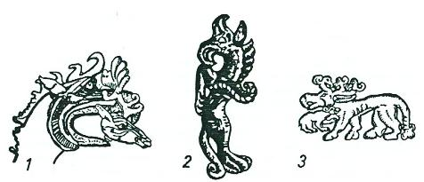

İslamiyet’i kabul eden Türklerde Şamanizm’in en önemli izleri, ilk dervişlerin istedikleri zaman bir hayvan veya kuş şekline girebilmeleridir. Mesela, "Geyikli Baba": Bu dervişler geyiğe binerler ve tepelerinde geyik boynuzları bulunan şapkalar taşırlardı. Bunlar hakkında elimizde çok bilgi vardır. Bu dervişler yalnızca rahip veya sihirbaz mahiyetindeki insanlar değil; peşlerine taktıkları on binlerce Türkü iskân ettirip, yerleştiren liderler idiler.
Az sonra göstereceğimiz gibi, şimdiki Şaman elbiseleri dejenere olmuştur. Bu konu üzerinde çalışan araştırıcılara göre en eski ve orijinal Şaman elbiseleri, kuş veya hayvan şekillerini taklit etme sureti ile yapılan elbiselerdi. Bunu giyen Şaman, hem kendi atasını ve hem de istediği zaman o kuşun şekline girebileceğini göstermek istiyordu. Bu şekil değiştirmeye mitoloji araştırmalarında (Metamorphose) denir. Türkler ise bu deyim karşılığı olarak (Donuna girmek) sözünü kullanırlardı. Bektaşiler, bu eski Şamanist inancı tasavvufa uydurup, "Ma'na âleminden velayetle" diye bir sebep de bulmuşlarsa da, bu bahane kuş donuna girmeği mazur göstermeğe kâfi değildir.
Aşağıda da söyleyeceğimiz gibi kuş totemi veya sembolleri daha ziyade ileri toplumlarda görülüyordu. 24 Oğuz boyunun sembol kuşları bunun en güzel bir örneğidir. İlk Türk Müslüman dervişleri de zaman zaman bir kuş donuna girerlerdi. Mesela Ahmed Yesevî, Turna donuna; Hacı Bektaş Veli güvercin donuna; Abdal Musa ise geyik donuna bürünürlerdi (A. Gölpınarlı, Vilâyet-nâme, s. 106). Abdal Musa, Hacı Bektaş Veli'nin Anadolu'ya gelişini şöyle anlatıyor:
"Güvercin donuyla Urum'a uçan,
"imamlar evinün kapısın açan."
Abdal Musa
Başka bir Vilâyet-nâme ise Hacı Bektaş Veli'nin Anadolu'ya uçuşunu tasavvufla açıklamaya çalışarak durumu şöyle anlatır (Tar. Dergisi, III, 1731) :
"Heman-dem ma'na âleminden velayetle bir gökçe gögerçin tonuna girip..." Hacı Bektaş Veli Anadolu'ya varınca, öyle anlaşılıyor ki yerli dervişler tarafından iyi karşılanmamış ve aralarında rekabet meydana gelmişti. Hacı Bektaş güvercin şeklinde Anadolu'ya gelince, Doğrul-Baba adlı Anadolu'lu bir derviş de hemen "doğan donuna" girerek, güvercin şeklindeki Hacı Bektaşı yakalamak istemişti. Fakat Hacı Bektaş silkinerek "âdem donuna" girmiş ve insan olarak doğanın boğazından yakalamış ve nefesini kesmişti. Doğrul-Baba tehlikeyi görünce Hacı Bektaş'a yalvarmış ve onun eteklerine yüz sürmüştü. Bu Anadolulu dervişin Doğrul adı da, Türklerin meşhur av kartallarından biri olan Toğrıl, Toğrul'dan başka bir şey değildir. Abdülkadir Geylânî de beyaz bir doğan şekline girerdi (F. Köprülü, Kayıkçı Kul Mustafa, s. 51, n. 1).
Öyle anlaşılıyor ki Hacı Bektaş, başlangıçta güvercin donu ile gökten gelmişti. Tasavvuftaki devri tamamlayarak gökten güvercin şeklinde inmiş ve tekkesinin önünde de âdem donuna girmişti:
"Ali oldum, Âdem oldum bahane,
"Güvercin donunda geldim cihâne.''
Abdal Musa
Bektaşilik ve Hurufîlik ile ilgili bir kitap olan Beşâret-nâme'de de şöyle deniyor:
"..Tekye önünde kondu, silkinip âdem tonuna girdi.."
"Horasan erenleriyle ma'en yeryüzüne inip, âdem tonuna girdi.." (Bk. Tar. Dergisi, 1, 16). Başka bir bölümümüzde de göstermeye çalıştığımız gibi bir hayvan şekline girmenin Tasavvuftaki meşhur mânevî devir ile bir ilgisi olmasa gerektir. Bu, doğrudan doğruya Budizm’in Tenasüh (Metapsychosis. Transmigration) prensibinden başka bir şey değildi. Alevî'ler tavşan'ı kötü sayarlar vr yemezlerdi. Çünkü onların bazılarına göre Muaviye veya Yezid'in ruhu bir "Tavşan donuna" bürünmüştü. Halk tabakası ise biraz daha basit düşünerek tavşanı Muaviyenin doğurduğuna inanırlardı. Güya Muaviye zaman zaman bir kadın gibi âdet görürmüş. Bunların hepsi de uydurulmuş şeylerdir. Fakat tavşan yememe âdetini de yine, Şamanizm'de aramak en doğru yol olsa gerektir.
Hacı Bektaş'ın, tasavvuftaki "Südûr ve tecelli" nazariyesine göre gökten güvercin şeklinde indiğini söylerler. Fakat Hacı Bektaş, yalnızca bir defa olarak cihana güvercin donu ile gelmemiş, günlük hayatında da güvercin olup uçmuştu. Bu da Tecelli ve Südûr nazariyesine ayrı düşer. Mesela bir yerden bir yere gideceği zaman da güvercin şekline girip uçuyordu:
"Kul Hasanım, var mı sözümde yalan,
"Münkirim gönlünü gümana salan,
"Doksan günlük yolu kuşlukta alan,
"Hünkâr Hacı Bektaş Ali kendidir."
Âşık Hasan
Büyük üstadımız F. Köprülü'nün Bektaşiliğin menşei hakkındaki yazıları elimizden düşmeyen bir kılavuzdur. Ancak yukarıda söylediklerimiz, bundan sonraki Şamanizm ile ilgili bölümümüzü destekleme ve Anadolu Türklüğüne uygulama maksadı ile yazılmıştır. Bundan sonra anlatacaklarımız, bu girişin bir devamıdır. Bu sebeple rahmetli üstadımızın fikirlerini aynen almaktan ziyade, yeni katkılar yaparak kendi görüşümüzle uygulamış bulunuyoruz.
Orta Asya halklarının ve dolayısı ile Türklerin, bazı hayvanları ve yırtıcı kuşları kutsal sayarak, onları kendilerine sembol edinmelerinin sebepleri üzerinde şimdiye kadar çok durulmuştur.24 Biz bu konuyu burada daha başka bir gözle özetlemek istiyoruz. Oğuz Destanlarına göre her boyun bir kuş sembolü vardı. Bu kuşlar da genel olarak yırtıcı kuşlardan seçilmiştir. Daha ziyade bir Moğol Tarihçisi olan Reşideddin, bu kuşlara Ongon deyimini kullanmış ve bu yüzden de bu deyim zamanımıza kadar gelmiştir. Aslında ise Ongon sözü Moğolca bir sözdür. Bunun Türkçesi ise Töz'dür. Töz sözü, Türkçede, "kök ve menşe" anlamına gelir. Bu sözle Türkler, hangi hayvandan veya hangi kuştan türemiş olduklarını ifade ediyorlardı.
Türklerin Töz ve Moğolların da Ongon dedikleri şey, hayvan veya insan şeklinde yapılmış putlar ve tapılan heykelciklerdi. Bunlar, ağaçtan, taştan, kemikten, madenden ve hatta çamurdan; daha doğrusu kabiledeki sanatkârlar bunu neden yapmaya güçlü iseler, o maddeden yapılırdı. Artık bu heykelcikler, o kabilenin, o soyun veyahut da herhangi bir ailenin aile ocağının koruyucuları olurlardı. Belirli zamanlarda yapılan din törenlerinde bu putlara yemekler verilir ve türlü saçılar saçılırdı.
Oğuz boylarının armaları olan kuşlara da Ongun adı verilmiş olmasına rağmen, Oğuz Türklerinin onlara böyle yemekler sundukları ve saçılar saçtıkları hakkında elimizde hiç bir kayıt yoktur. Bazı kavimler böyle iptidaî din devrelerini erken çağlarda geçirmiş; fakat bu eski hatıralar, toplum yüksek bir seviyeye eriştikten sonra bile, arma şeklinde olsun devam edegelmişlerdi.
Oğuzlardaki bu gelişme tarzı, mesela Sibirya'daki kavimlerde daha başka bir yol takip etmiş ve toplum yine de iptidailikten kurtulamamıştı. Hayvanlar ve kuşlar Sibirya'da insan şekline sokulmuş ve gelişme bu şekilde idrak edilmişti. Şüphesiz ki Oğuzların daha ileri bir hamle yapmalarında İslamiyet’in de büyük bir tesiri olmuştu. Fakat buna rağmen Orta Asya’daki hayat, bu kitapta daima söylediğimiz gibi, daha gerçekçi ve daha ileri bir yolda gelişmişti.
Kuzeydeki Buryat Moğollarında artık bu ongonlar tamamı ile insanlaşmış, yani beynelmilel deyimi ile (Antropomorf) bir şekle girmişlerdi. Hâlbuki Türk boyları daha muhafazakâr kalmış ve bu eski kutsal atalarını hayvan şeklinde, yani (Zoomorf) bir şekilde bırakmayı tercih etmişlerdi. Bu sebepledir ki Prof. Zelenin, Orta Asya ve Sibirya'daki Ongon kültürünü araştırırken, işe iptidaî Moğollardan başlayamamış ve ancak kendisine çıkış noktası olarak Yenisey nehri kıyılarında yaşayan Kızıl Türklerini görmüştü.

Şekil 7: Altay Hun çağı Pazırık, Tuyahta ve Başadar kurganlarında bulunmuş figürler: 1. Ağzında bir geyik başı tutan ejderha. 2. Kartal başlı, kurt veya kaplan ayaklı, kuyruklu at. 3. Kutsal ve efsanevî teke geyikle döğüşen bir hayvan.
Oğuz boylarından her birinin bir kuş Ongon'u bulunduğunu ve Oğuz Destanlarının bu kuşlara büyük bir önem vererek, adları ile birer birer saydıklarını söylemiştik. Her kabile niçin bir kuşu kendisine bir sembol veya arma olarak alıyordu? Oğuz Destanlarının anlatıldığı çağlarda bunun cevabını bulmak elbette güç bir şeydi. Artık Oğuz boylarındaki bu kuşlar, eski kutsal mahiyetlerini çoktan kaybetmişler ve yalnızca bir sembol ve arma (Heraldry) olarak kalmışlardı. 18. asırda Orta Asya’da seyahat ederek Orhun yazıtlarını da bulan İsveçli Subay Strahlenberg, Yakut Türklerini de ziyaret ederek onlar hakkında şu çok önemli bilgileri vermişti25:
"Yakut'lara göre, yaratıklardan (Creatur) biri kutsal sayılır ve her kabile ile soy da, bu hayvandan türediklerine inanırlardı. Bunlar, boyların kutsal saydıkları kuğu, kaz, karga v.s. gibi hayvanlardı. Bunun içinde, bu hayvanlar hiç bir suretle yenmezdi. Fakat o hayvanın boyundan gelmeyenler için bir mesele yoktu. Başkaları pekâlâ diğer boyun kutsal hayvanını yiyebilirlerdi".
Yakut Türklerine-ait kabilelerden her birinin, bir kutsal hayvandan türediklerine inandıkları ve bu sebeple o hayvanların etlerini bile yemedikleri başka kaynaklar tarafından da tekrarlanmıştır26. Bu konular ile uzun zaman ilgilenmiş olan bir yazarın, aşağıdaki bilgileri de, bu bakımdan büyük bir önem taşır27:
"Yakut kabilelerinin kutsal ataları olan hayvanlar arasında başlıca şunları sayarlar: Beyaz lekeleri olan at, karga, kuğu, atmaca, kartal, turna, boz inek vs. Bilhassa ayaklarında ve başlarında bir parça beyazlık bulunan inekler, çok kutsal sayılırlardı. Her kabile, hangi hayvandan türediğine inanıyorsa, o hayvanı ürkütmez ve hoş tutardı. Onların inançlarına göre, kim kendi kabilesinin kutsal hayvanını yaralar, öldürür, yer ve hatta korkutursa, onun başına büyük felâketler gelirdi. Meselâ, belirli bir inek tipinden türediklerine inanan bir kabileyi ele alalım: Eğer o kabilenin sürülerinden birinde, bu renkte ve bu tipte bir inek buzağısı doğarsa, o kabileye mensup olan herkes, bu yavruya bakar ve ona dikkat ederdi. Buzağının sahibi onu satma veya hediye etme hakkına sahipti. Fakat bu buzağıyı alan yeni sahipleri, onun ne sütünü içebilir ve ne de etini yiyebilirlerdi. Yabancılar bu kaideye uymaya mecbur değillerdi. Fakat onun kabilesinden olan herkes, o ineği yabancılara vermemeye dikkat ederlerdi. İneğin sahibi ölürse, inek doğrudan doğruya adamın baba tarafından gelen akrabalarına miras olarak kalırdı. Eskiden her Yakut kabilesi, türediği hayvanın adı ile birlikte anılır ve o kabileden olan herkes de, bu hayvanın adını soyadı olarak kullanırlardı. Bu suretle herkesin hangi kabileden ve hangi hayvandan geldiği kolayca bilinirdi. Tabii olarak her kabile ve hayvanın adı, bütün Yakutlar arasında pek makbul ve değerli sayılmazdı. Kartal gibi önemli hayvanlara bağlı olan boylar, Yakutların soylu tabakalarını teşkil ederlerdi."
Moğol Buryatları türedikleri bu totem hayvanlarına utha adı verirlerdi. Bunların etlerini yemedikleri gibi kanlarını da görmek istemezlerdi28. Kurban olarak verilen hayvanların derileri de Şamanın olurdu. Şamanlar genel olarak bunu bir ticaret haline getirmişler ve ormanlarda avlanan bazı hayvanların derilerine bile sahip çıkmışlardı. Onlar bu derilere bazen ot veya saman doldurarak yeniden şekil veriyorlar ve hayvanın yeniden dirildiğine herkesi inandırmak istiyorlardı. Bir kısım derileri de duvarlara ve ağaçlara asarak, o hayvana bir saygı görevinde bulunduklarına inanıyorlardı. Fakat sonunda, bu derilerin çoğu Şamanın zimmetine geçiyordu. Yakut Türklerine çok yakın oturan ve hatta Yakut Türkçesini konuşan Dolgan'lar, kartal veya kuğu gibi kutsal kuşların adlarını bile ağızlarına alamıyorlardı. Onlara göre bu hayvanlara ormanda ölü olarak rastlasalar bile, el değdirmek yasaktı. Bilâkis o hayvanın dinî bir merasimle gömülmesi gerekiyordu29. Bütün bunlar, eski Türk Totemizminin izleri olmalıydılar.
Yine eski Orta Asya ve Sibirya inançlarına göre, totem veya Ongon sayılan bu kutsal hayvanlar insanlara iyilik verdikleri gibi, kötülük de getirirlerdi. Meselâ hastalıklar, hep onlardan gelirdi. Bunun için de Şaman, karada, denizde ve havada yaşayan hayvanların şekillerini ve kemiklerini bir araya getirerek onlardan yardım dileniyordu. Gece yarısı başlayan bu tören, genel olarak çadırlarda yapılırdı. Bu törende Şaman, kurt derilerini sol yanına alır; sağ yanında ise türlü balık cinsleri yılanlar ve bir ayı postu bulundururdu.30
"Hayvan-Ana" inancı da, Orta Asya ve Sibirya Türklerinde çok yaygın bir halde idi. Sayın Prof. A. İnan, Şamanizm adlı değerli kitabında, bu inancı ervah olarak adlandırmış ve bu konuyu da ervah inancı ile ilgili bölümde incelemiştir.
Şekil 8: Efsanevî Altay kartal başları (Rudenko'dan)
Yakut Türkleri böyle bir Ana-Hayvan'a İyö-Kul adını verirlerdi. Fakat bu Ana-Hayvanlar mahiyet bakımından, kabile ve boy ongonlarından farklı idiler. Ongon veya Türklerin Töz dedikleri hayvan ruhu, bir kabilenin ve toplumun atası idi. Burada söz konusu edeceğimiz İyö-Kul ise, yalnızca belirli bir kişinin, yani bir Şamanın ruhu idi. Bu ruhlar Şamana hayatı boyunca yardım ederlerdi. Ruhları küçük ve önemsiz hayvanlar olan Şamanların değerleri de toplum içinde azdı. Fakat bir Şaman, olgunlaştıkça, yeni bir hayvanı Ana-Hayvan olarak alırdı. Bu da en çok hayatta üç defa olurdu. İyi ana hayvanlar, boğa, aygır, geyik, kartal ve ayı idi. Kötüler ise kurt ile köpekti. Bu konu ile ilgili olarak pek çok bilgi toplanmıştır31.Fakat biz bu kitapta, bununla yetinmeye çalışacağız.
Türklerde totemizm’in gerçek izleri: Uno Holmberg'in de dediği gibi, totemizmin en gerçek izlerini Şaman elbiselerinde görebiliriz32. Maalesef eski Çin kaynaklarında, Türk kamlarının elbiseleri hakkında hiç bir bilgi yoktur. Bu sebeple bu konu üzerinde fazla konuşamayacağız. Ancak Uno Holmberg'in fikirlerine şunları ilâve edebiliriz. Mesela Çin kaynaklarına göre, Göktürk devleti içinde ve Altay dağlarında oturan Tarduş Türklerinin atası, "Kurt başlı bir insan" imiş. Bizce, bu da eski Türk totemizminin bir izi sayılmalıdır. Proto-Moğol'larda bu zihniyet, daha geriler ve daha iptidaîleşir. Proto-Moğol efsaneleri ile ilgili bölümümüzde de anlatacağımız gibi. Meselâ Kitanların ataları, birer çadır içine konmuş, bir köpek başı ile bir domuz başı idi (Bk. S. 551-2).
19. asırda Şamanizm ve Şaman elbiseleri gerçekten çok dejenere olmuştu. Şamanlar artık heybetli görünmek için, bir yığın çıngırakla süslenmiş ve şuralarına buralarına, ellerine ne geçirirlerse, ithal malları da dâhil bir sürü süs asmaya başlamışlardı. Hâlbuki bunların hepsi sonradan ilâve edilmiş şeylerdi. Esas ve öz şaman elbisesi ise daha başka idi. Eskiden her Şaman, kendi kişisel eğilimine (individual phenomena) göre, ilâveler yapamazdı. En orijinal şaman elbisesi, bir "Hayvan- Ata"yı temsil eden ve üzerinde onun belirtilerini taşıyan bir elbise idi.
Şaman elbisesinin tek ve öz gayesi, bir Hayvan-Ata'yı kendisiyle sembolleştirmek ve o hayvanı temsil etmekti. Çıngıraklar, demir ve kemik plakalar, artık ikinci derecede gelen eşyalardır. Hiç bozulmamış ve orijinal Şaman elbiselerinde, baş süslerinden tutunuz, ayakkabının süslerine kadar aynı hayvanın belirtileri ve işaretleri görülür ve elbise, bütünü ve tam manası ile bir tek hayvanı temsil ederdi. Elbise üzerine asılan süsler ve çıngıraklar da, yine aynı hayvanın derileri ile kemiklerinden yapılırdı.
Maalesef şimdiye kadar kurt elbisesi giyen bir Şamana rastlanmamıştır. Esasen Kuzey Sibirya'da Kurt-Ata'lara sahip olan kabileler ve Şamanlar da pek soylu sayılmıyorlardı, öyle anlaşılıyor ki Ortaasya'nın ileri toplumlarında ve büyük devletlerinde, çok erken çağlarda meydana gelen "Kurt kültü" çabucak silinmiş ve ancak efsanelerde bir motif ve bayraklarda da bir sembol olarak kalmıştı. Göktürklerin "Kurt başlı bayrakları", bu çok eski hatıraların bize kadar gelen izleri olsa gerektir.
Tören elbisesinin kutsallığı: Hayvan-Ata'nın kemiklerini ve tüylerini kendinde toplayan elbiseler kutsaldı. Bu elbiseler genel olarak çıplak vücuda giyinilirdi. Şaman, atasının şeklini alırken bütün insanî şeylerden kendini kurtarmış olurdu33. Hatta onların anlattığına göre kartal, ağaçlar üzerinden uçarken kanatlarından bir kısmını atar ve Şamana, benim bu kanatlarımla uç dermiş. Şaman da bu kanatları alıp göğe uçarmış. Bütün bu inanışların hepsi Yakut Türklerine aittir.34 Öyle anlaşılıyor ki kuş tipi elbiseleri ancak göğe uçabilen şamanlar kullanabiliyorlardı. Hatta bazı söylentilere göre Şamanın biri gökte uçarken, nasıl olmuşsa elbisesini düşürmüş ve bu yüzden de yere düşerek parçalanmış. Bu elbiseler de "Sihirli külahlar" gibi, "Sihirli elbiseler"di. Kuş elbisesini giyinen Şaman fevkalâde bir kuvvet kazanıyor ve bununla da uçabiliyordu. Bu sebeple tören dışında bu elbiseler pek giyinilmezdi.
"Kartal-Ata", "Geyik-Ata" ve "Ayı-Ata" elbiseleri: Şimdiye kadar Orta Asya ve Sibirya'da en eski "Hayvan-Ata"ları temsil eden başlıca üç tip elbise bulunmuştur. Bunlar da geyik, kuş ve ayı elbiseleridir.
Geyik elbiselerine örnek olarak bir Şaman başlığı resmi veriyoruz. (Bk. Şekil. 9,1) Bu başlığın kenarları demirden yapılmıştır. Önündeki hotozda demirdendir ve bir nevi Orta Asya miğferlerini hatırlatır, öyle anlaşılıyor ki Sibirya Şamanları, Orta Asya savaşçılarına biraz da özenmiş gibi idiler. Yandan sarkan püsküllerin bazılarının uçlarında çıngıraklar da görülüyordu. Bu geyik tipi başlık, Yenisey nehri kenarlarında yaşayan Ostiyak Şamanlarından elde edilmiştir35. Böyle başlık bulamayan Şamanlar da, yanlarına veya omuzlarına birer geyik boynuzu takmakla yetiniyorlardı.36
Kuş tipi elbiseler, daha ziyade Altay ve Sayan dağları bölgelerinde görülür. Bu bölgeler, eskiden beri Türk kültürünün tesirleri altında kalmıştır. Bundan sonra bu kuşlu elbiseler, Kuzey Sibirya'ya doğru uzanır. Altay Dağlarının daha güneyinde ve Moğolistan'da yoktur. Kuş tipi Şaman elbiselerinin vatanı Altay dağları olarak kabul edilmiş gibidir.37 Şapkalar, elbise ve hatta ayakkabılar baştan aşağıya kadar kuş tüyleri ile süslenmiştir. Bu tüyler arasında Kartal kuyruğu ve kanatları çoğunluğu meydana getirirdi. Bunların yanında demir plakalar da yok değildi. Şaman elbiselerinde niçin bu kadar çok demir parçalarının bulunduğunun üzerinde duran etnograflar da vardır. En önemli fikirlere göre, bu plakalar "Demir çağının" birer hatıraları idiler.38 Bu plakalar yalnızca süs olarak kullanılmıyorlardı. Törenlerde söylenen sözlerden, bu demirlerin insan veya hayvanların iskeletlerini de temsil ettikleri anlaşılıyordu.
Şekil 9: En eski ve orijinal Şaman elbiseleri hayvan veya Totem tipinde olanlardır: 1, 2. Şaman elbisesindeki geyik başlığı. 3, 5. Ayı kemikleri ve ayağı ile yapılmış Şaman çizmesi. 6. Şamanın dişine ve eline taktığı ayı veya kurdun dişi ile elleri. 7. Şamanın ayı kemiğinden yapılmış aletleri (U. Holmberg, The Shaman costume, s. 21).
Ayı tipi elbiseler, daha ziyade Kuzey Sibirya ile Kuzeybatı Sibirya’da görülürdü. Başlıklar da, genel olarak ayının baş derilerinden yapılırdı. Elbise üzerine, ayının muhtelif yerlerinden alınmış kemikler dikilir ve bu suretle Şaman kendisinin bir ayıyı temsil ettiğini göstermek isterdi. Bu şaman elbiselerinin en enteresan kısmı çizmelerdi. Çizmenin burnu ve topuğu tıpkı ayı ayağını benzetilmişti. (Bk. Şekil. 9,5) Ayının bacağından kesilen parçalar da, yine çizmenin münasip yerlerine dikilmişti. Şamanın elindeki alet ve sopalar da ayı kemiklerinden yapılırdı. (Bk. Şekil. 9,7) öyle anlaşılıyor ki bu kemikler, ateş üzerinde ısıtılarak biraz şekillendirilmiş de oluyorlardı. Şaman bundan başka ellerine ayı pençelerini andıran "demir eldiven" veya muştalar da takıyordu (Bk. Şekil. 9,6). Bu kemikler seçilirken, bilhassa ön ayak kemiklerine daha fazla önem veriliyordu.39
"Demir eldiven ve takma dişler", Orta Asya kültüründe önemli bir rol oynamıştır. Muhtelif din törenlerinde ve hatta tiyatroya benzer temsillerde bu gibi maskeler çok kullanılmıştı. Esasen bu âdet eski bir Çin ananesidir. Bununla beraber Orta Asya maskeleri kendilerine mahsus bir özellik gösterirlerdi. Meselâ Yakut Türklerine ait bir Şaman böyle takma dişler takarken vahşi bir hayvanı temsil ederdi ve yine onun inancına göre bu hayvan, kendi soyunun türediği bir totemdi.(Bk. Şekil. 9,4) Geçen asırda Orta Asya ve Sibirya'ya gitmiş olan seyyahlar, bu eldivenlerin yalnızca ellere değil; çok daha uzunlarının kollara bile takıldığını yazmışlardı40. Bazılarına göre ise, Şaman çizmelerinin deriden yapılmış olmalarına rağmen, yukarıdan aşağıya kadar kalın demirle kaplanmıştı. Bu demir kaplamalı çizmeler de dış görünüşte bazı hayvan şekillerini andırıyorlardı.41 Bütün bunlar bize gösteriyor ki, bu giyiniş tarzları Çin adetlerine benzemekle beraber, bütün bu baş, kol ve ayak maskeleri ise daha ziyade Altay ve Sibirya dininin oluşumundan ileri geliyordu.